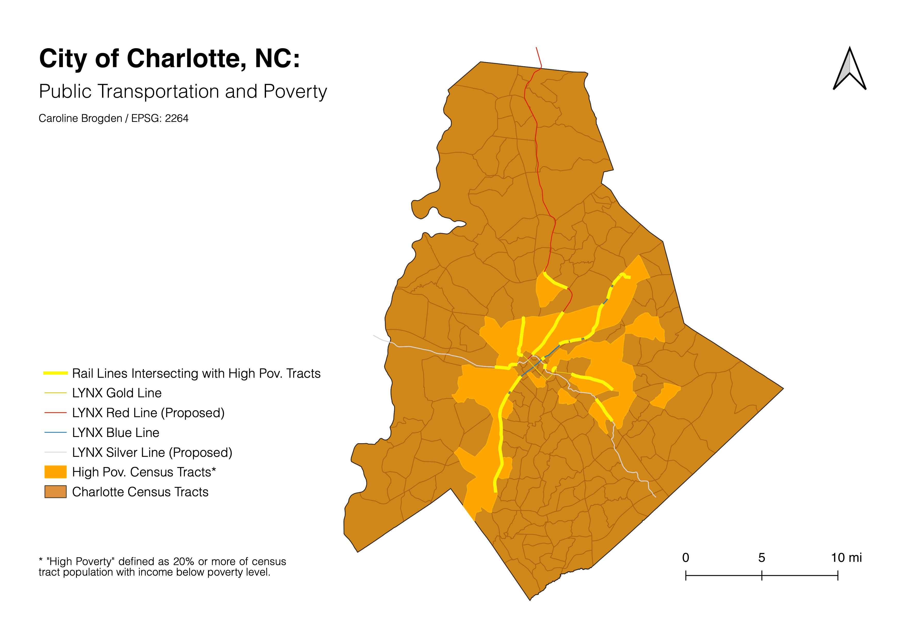

Homework 10
Caroline Brogden
For the following map, I investigated where public transportation - LYNX rail lines - currently service low income areas in the Charlotte metro area, specifically examining census tracts of Charlotte with high levels of poverty. (A definition for "high poverty levels" is included in the map below.) Cost burdened families and individuals may rely on public transportation for commuting needs, hence the importance of identifying where rail lines run and where they may be proposed in future development. To create this map, I used the intersect geoprocessing tool to pinpoint rail line data that overlaps with census tracts where over 20% of the population has an income below the city's poverty line. I used the dissolve tool to remove the census tract boundaries within the polygons representing high poverty census tracts to improve legibility, given there are several lines running through the layer. The majority of the blue and gold lines, which already exist (2018 data were used for transportation; 2011-2015 census data were used), service these tracts, though their accessibility, use patterns, etc. cannot be determined from this map alone. Note: I chose this topic as an exploration of PLAN 247 material regarding affordable housing and cost burdens in major NC cities, another class I am currently taking.

Data used for this project:
Census data for Charlotte income.
Links to LYNX data:
Silver Line
Gold Line
Red Line
Blue Line